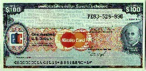
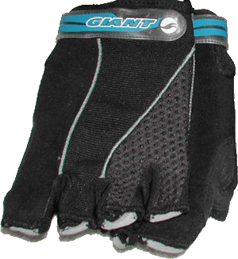
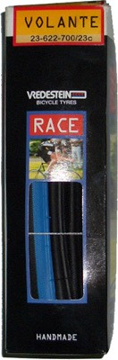
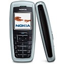

一大早就頂著大太陽跑了好多個地方（汗）
板橋監理站（設在中和的永和路，很麻煩找），繳NT.500罰單。
本來想在遠東銀行直接買歐元，想不到沒有歐元現鈔，太遜了∼
那買旅行支票總有吧？居然也只有AE的美元旅支，太淺了∼
換跑去台灣企銀，外匯指定銀行總比較有看頭了吧？
買了500元現金的歐元。（100X4、50X1、20X1、10X2、5X2）。
匯率很貴，1:39.16，光買現金就花了NT.19,580。
這都要感謝法國的歐洲憲法表決失敗，讓主推歐洲統一的法國吃了重擊。
使得歐元從本來的1:42跌到目前1:39。
匯差3元，讓換3000歐元的我，現賺9000元台幣，蠻爽的！！
很複雜對吧？因為歐洲憲法沒通過的緣故，
使得一個要去歐洲自助旅行的年輕人賺了九千元。
接著再買旅行支票2500歐元，最大面額100歐元X25張。
英國最大Thomas Cook發行，匯率比買現金好一點點，1:38.83。
其實旅行支票的好處還是大於不便的，遺失可以補發、世界通用、
沒有使用期限、匯率較好、在指定銀行兌換不收手續費、安全有保障。
旅支的部份，花了NT.97,075購入。

從遜遜的遠東銀行提領了NT.120K，厚厚一疊的千元鈔票。
拿在手裡，只有一個『爽』字可以形容∼ ^______^
拿到了相當華麗的歐元，相較之下，其實台幣做的蠻不錯的。
歐元面額越小，紙幣也越小張，面額越大，圖案越現代化。
防偽的部份，跟台幣差不多，防偽線、凹凸墨水、浮水印...etc
整體來說，很像是大富翁的假錢，色彩絢爛∼

接著去中國信託再買一個保險『平安福』，目前保額已經突破三千萬元。
在國外也多了一個醫療險，如果吃成藥吃不好，非得上醫院的話。
只要拿收據跟醫療證明，回台灣還是可以申請保費的。
休息一下吃個午餐，下午還要去樹林監理站，繼續跟可惡的行政機關搏鬥 ~"~
要扣我摩托車大牌是吧，那就拿去吧∼∼反正我也沒再騎了。
Scott送來的『iPod線控』今天收到了，謝謝你在出國的最後一天送來價值NT.1490的禮物。

阿魯那邊也提供了1GB多的globe的音樂，總算找到了我夢寐以求的
『biting her nail（WAKE UP REMIX）』，阿魯我真是愛死你了 >"<
上次環島阿魯提供了MD一台，幾乎都在聽globe的歌，今天總算也進駐到iPod裡頭了∼
阿魯目前在NOVA的3F蘋果店打工，可惜你太慢去上班了，
不然我買Airport Express就不用錢了 /_\ （東西拿了就跑掉）。
弄到下午五點，總算把車牌給註銷掉了，等回來再領新的車牌吧。
繞去樺興單車行，本來是要拿裝單車的紙箱子。
但最近騎車比較頻繁，發現手指跟手掌相接的部份有點脫皮，
所以買了一雙Giant手套，NT.750。

接著為了保險起見，還買了一個VREDESTEIN外胎，要騎到外胎壞掉真的不容易，
但多一分準備就少一分懊惱，現在不買，到了國外要用的時候就麻煩了，NT.1200。

晚上家人聚餐，港式飲茶，餞別行。
接著再去血拼了兩件長褲、一件襯衫，還買了哨子跟繩子。
辦了第二隻的手機含門號，NOKIA2600+遠傳以備不時之需（遺失、故障）。

然後到二姐家搜刮了兔子電池、肥皂、瑞士刀、沐浴乳、止痛藥、牙膏、維生素....
行李有點爆滿的預感@@"